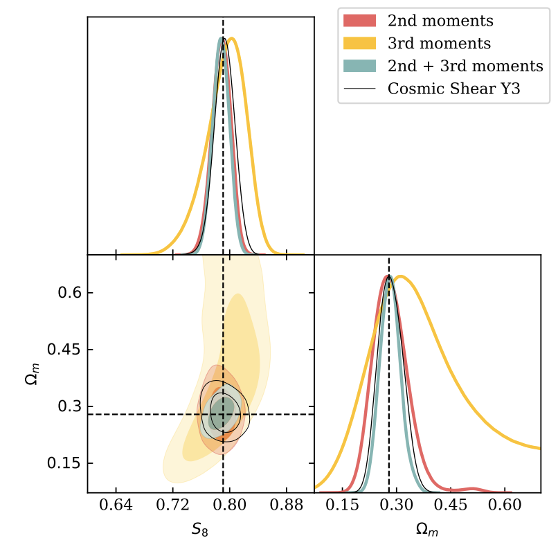

Research
Survey Science
 I am actively involved in two large optical galaxy surveys, the Dark Energy Survey (DES) and the Vera C. Rubin Observatory's Legacy Survey of Space and Time (LSST). I work data from DES and simulations from LSST to answer questions I'm interested in (see below). These surveys provide a large, homogeneous and complete sample of the sky for statistical studies of cosmology, galaxy formation and new physics. It has always been a fascinating idea that we can use the whole ensemble of galaxies as test particles to map out the cosmic history -- it's like setting up the largest physics lab experiment.
I am actively involved in two large optical galaxy surveys, the Dark Energy Survey (DES) and the Vera C. Rubin Observatory's Legacy Survey of Space and Time (LSST). I work data from DES and simulations from LSST to answer questions I'm interested in (see below). These surveys provide a large, homogeneous and complete sample of the sky for statistical studies of cosmology, galaxy formation and new physics. It has always been a fascinating idea that we can use the whole ensemble of galaxies as test particles to map out the cosmic history -- it's like setting up the largest physics lab experiment.
Weak Gravitational Lensing
Light bends as it travels through the mass distribution of the Universe, resulting in the observed images of galaxies to be distorted. This provides us with a powerful tool to study the mass distribution of the Universe, including about 80% that we cannot see. Throughout my research, weak gravitational lensing has always been a consistent thread in the various topics I investigated. This ranges from studying how systematic effects in the telescope optics and the atmosphere for LSST affects the cosmological measurements, to using weak lensing to map the large-scale structure and constrain cosmological parameters, to using new weak lensing statistics to understand new physics problems.
Image: a unified analysis for four weak lensing surveys (Chang et al., 2019).
Small Scales
Cosmologists like to treat galaxies as point particles, but they really aren't! On the very small scales, the modeling of the astrophysical effects is much more complicated. On the other hand, however, being able to model these small scales will ultimately allow us to utilize a large amount of information "for free". I am interested in using state-of-the art datasets to constrain the small-scale information. Examples include using the Halo Occupation Distribution (HOD) framework to model galaxy-galaxy lensing and use the cross-correlation of galaxies and the Sunyaev Zel'dovich effect to map the distribution of diffuse gas.
Image: HOD modeling of the DES galaxy-galaxy lensing measurements. (Zacharegkas, Chang et al., 2022).
Combining Galaxy and Other Surveys
Optical surveys are just one window where we can collect information about the Universe. There are many other windows, and two of the most exciting ones to me are the cosmic microwave background (CMB) and intensity mapping (IM). I am involved in several projects combining galaxy and CMB data (CMB lensing and the Sunyaev Zel'dovich effect) from the South Pole Telescope (SPT) and the Atacama Cosmology Telescope. Optimally combining all the information is important for systematics mitigation, breaking degeneracies, as well as constraining some of the most complex baryonic physics.
Image: cosmological constraints from the third year DES data and combined with CMB lensing (Chang et al., 2022).
Higher-order Statistics
Two-point statistics (power spectra and correlation functions) are mature statistiics that the field has been relying on to do cosmology up to now. Most of the topics I've described above relies on two-point statistics. However, there is certainly a lot of information we are not capturing if we only use two-point statistics. Most interestingly, some of the new physics can be hidden in these higher-order statistics (e.g. inflation). I am interested in the practical aspects of making these higher-order statistics robust and suitable for applying to modern datasets, especially to galaxy surveys.
Image: cosmological constraints from second and third moments, as projected for the third year of DES weak lensing data. (Gatti, Chang et al., 2020).
Cluster Outskirts
Galaxy clusters are the most massive bound objects in the Universe and have long been a powerful probe for cosmology and new physics. The outskirts of galaxy clusters is one of the most exciting playgrounds for cosmologists today -- there is a wealth of information regarding gravity, dark matter, and how mass and gas are falling into the clusters. With the ongoing optical and CMB surveys, we are just beginning to collect enough data to detect these signatures in galaxies, mass (through weak lensing) and gas (through the Sunyaev Zel'dovich effect).
Image: we compare the sharp feature detected in the gas with the slpashback feature (Anbajagane, Chang et al., 2021).
Simulations
 Nobody will doubt that the upcoming decade in cosmology will be driven by data -- the more complex analysing and combining large datasets are, the more challenging it is to deconvolve the various instrumental and observational effects from the measurements. Forward-modelling is one of the most natural approaches to the problem. I have been involved in the early development of the LSST Photon Simulator, and building DES mock images from cosmological simulations and a fast image simulator UFig. Other types of simulations I've worked on include spectroscopic simulations and radio spectrometer time-streams.
Nobody will doubt that the upcoming decade in cosmology will be driven by data -- the more complex analysing and combining large datasets are, the more challenging it is to deconvolve the various instrumental and observational effects from the measurements. Forward-modelling is one of the most natural approaches to the problem. I have been involved in the early development of the LSST Photon Simulator, and building DES mock images from cosmological simulations and a fast image simulator UFig. Other types of simulations I've worked on include spectroscopic simulations and radio spectrometer time-streams.
Image: a cutout of a DES image (right) and its simulated counterpart (left) using the UFig image simulator (Chang et al., 2015).
Hardware
 Although I've not spend a long time in the lab, I am interested in understanding all the components that build up to an experiment, and that include instrumentation. My hardware experience include setting up a lab for the early stages of LSST detector testing at Stanford and helping with the design and development of the hardware system at the Bleien Radio Observatory.
Although I've not spend a long time in the lab, I am interested in understanding all the components that build up to an experiment, and that include instrumentation. My hardware experience include setting up a lab for the early stages of LSST detector testing at Stanford and helping with the design and development of the hardware system at the Bleien Radio Observatory.
Image: the 7m dish (left) and 5m dish (right) at the Bleien Observatory where a group of cosmologists learned about radio astronomy.